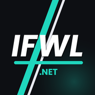

You are offline
The IFWL Licence Centre needs a connection to load your licence, races and results. Check your signal and try again.

The IFWL Licence Centre needs a connection to load your licence, races and results. Check your signal and try again.